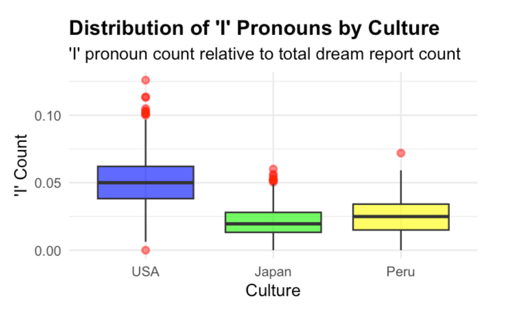
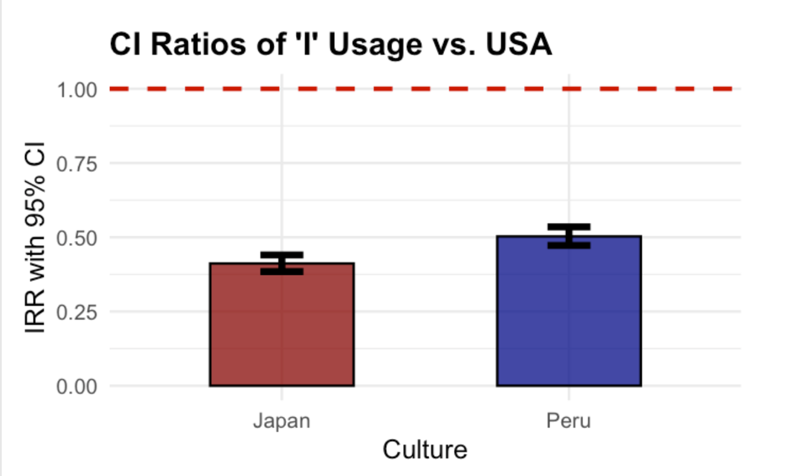
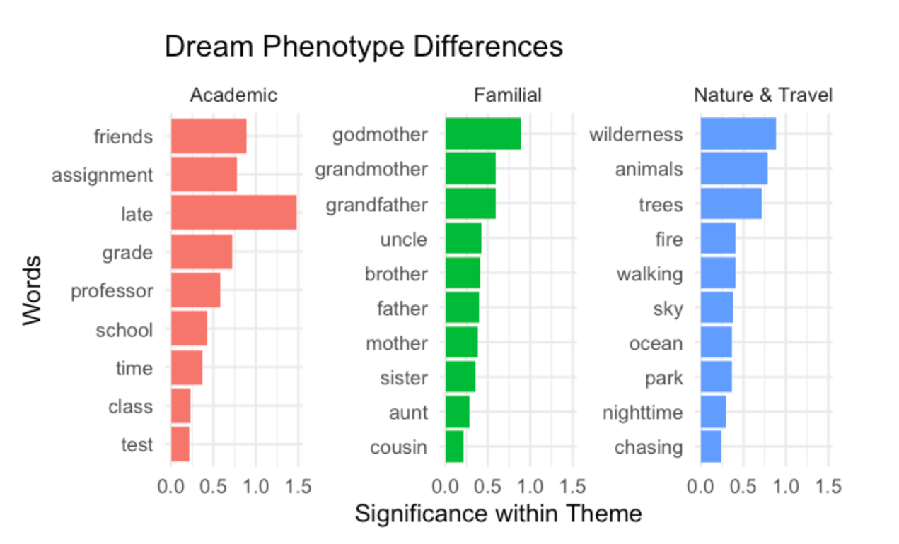
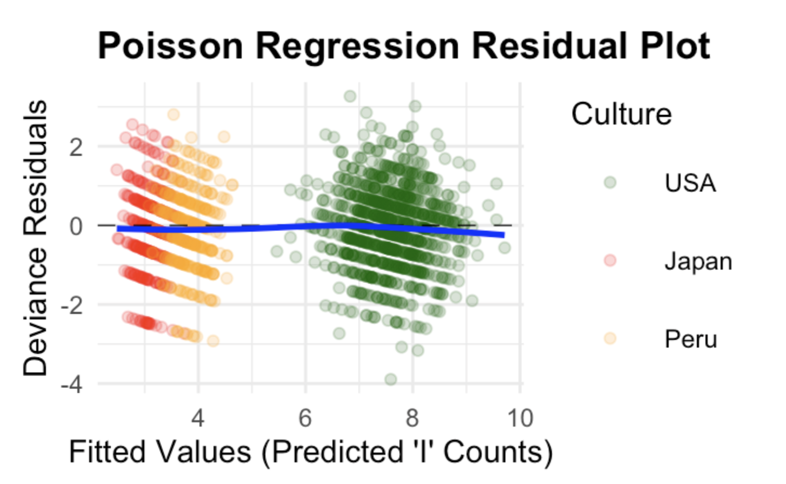

Academic
The paper groups words such as assignment, grade, professor, school, and test into an academic interpretation.
03 / Statistical research · NIU CURE / University Honors capstone
Dreaming in Different Cultures: an exploratory comparison of themes and first-person language in American, Japanese, and Peruvian DreamBank narratives.
The research question
My NIU Honors capstone, Do Dreams Reflect Our Culture? A Statistical Analysis on Dream Narratives, uses DreamBank reports to explore recurring themes and first-person language across three cultural groups.
The analytical challenge is to turn unstructured text into comparable measures while accounting for unequal report lengths and sample sizes. The paper describes college-student cohorts and a corpus of more than 1,600 reports; the source records were not supplied for an independent recount.
Reported findings & original figures
The figures below were extracted unchanged from the capstone paper. They document the reported analysis; the raw corpus and numeric model outputs are still needed for independent reproduction.


The paper groups words such as assignment, grade, professor, school, and test into an academic interpretation.
Terms including grandmother, grandfather, father, mother, and sister support a family-oriented interpretation.
Terms such as wilderness, animals, trees, ocean, and park support the third thematic interpretation.

Research implication: Group differences in archived language warrant closer study. Translation, collection period, report length, cohort composition, and repeated reports from the same dreamer could also explain part of the pattern. These results do not justify stereotyping people or inferring an individual’s culture.
Method & transferable skills
The draft R Markdown uses tidytext and quanteda for tokenization, lowercasing, stop-word removal, and document features. Sampling code combines DreamBank series and deduplicates text within each sampled series. Source IDs, retrieval details, and a frozen corpus would make the selection reproducible.
The draft fits LDA with 10 topics, then refines stop words and explores 15 topics with a fixed seed. The paper summarizes three thematic interpretations. Their relationship to the fitted topic terms and document probabilities needs the final output tables.
The draft counts first-person singular forms and uses log(total_words) as a Poisson offset. This compares rates rather than raw counts from differently sized reports. It also proposes a quasi-Poisson fit after an overdispersion diagnostic.
The paper reports permutation testing to address unequal sample sizes. The attached draft has no permutation implementation or outputs. A valid resampling design also needs an appropriate exchangeability assumption and attention to repeated reports from dreamers.
This project brings together text preparation, interpretable feature engineering, count-data modeling, diagnostics, and communication to an academic audience. The practical lesson is to define what a text metric measures before using it to explain group differences.

get_dreams(), retains Japanese school-child cohorts despite a college-only note, includes a syntax error after the Poisson fit, and refers to an undefined topic-summary object.The supplied DreamSAT workbooks were inspected but are not used as results evidence: both have zero project totals and division-by-zero errors. Populated male/female norm columns are reference values, not findings for these three cultural groups.
Primary artifacts & evidence status
The capstone paper is the source for the reported findings and original figures. The draft code documents the developing method. Results are presented with caveats until the final corpus, executable analysis, and model tables can be reconciled.
Paper: Michal Kuderski, Do Dreams Reflect Our Culture? A Statistical Analysis on Dream Narratives, Northern Illinois University, May 2026. The source paper makes stronger cultural and significance interpretations; this portfolio retains the observable narrative patterns and states the limits of verification.